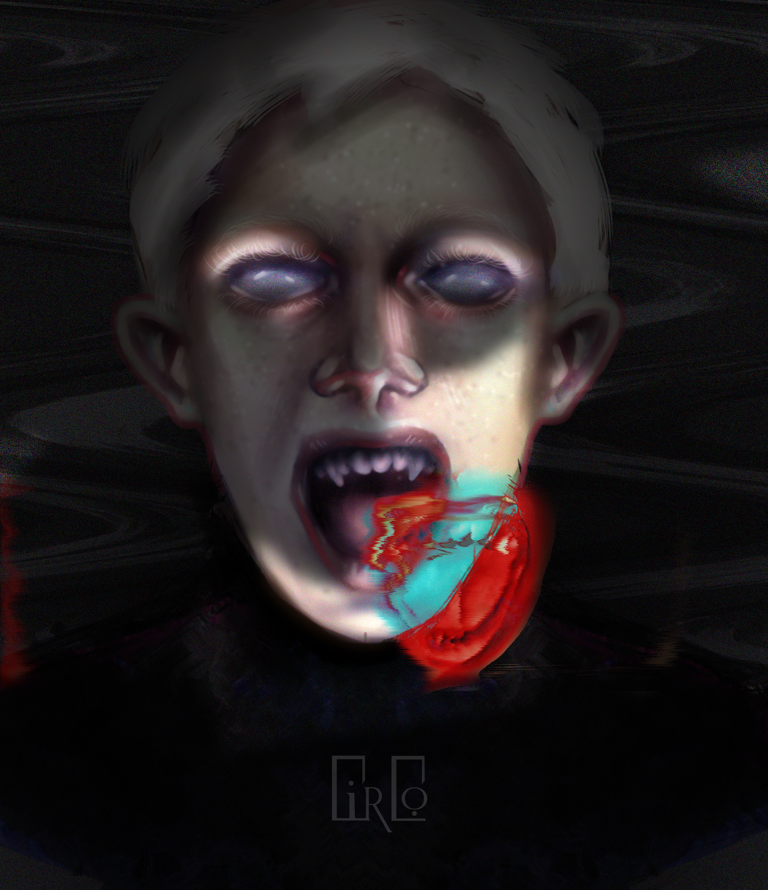

Обо мне
Я работаю как и в традиционном стиле так и в цифровых программах. За время своей практической деятельности я разработала более 250 иллюстраций, по заказу издательства "Велигор". Основное направление в котором я работаю - это 2D иллюстрации в жанре хоррор.
Навыки
Основное мое направление - цифровая и традиционная живопись. Соответственно в мою работу входит: создание концепт-артов, 2D иллюстрации, разработка фоновых изображений, разработка концепций многосерийных иллюстраций. Также я занимаюсь векторной иллюстрацией и разработкой фирменного стиля.
ПодробнейТехнологии
Я работаю в растровых и векторных программах, в зависимости от поставленной задачи. Также я занимаюсь традиционными видами искусства
- Photoshop
- Illustrator
- Sai Paint tool
- Figma